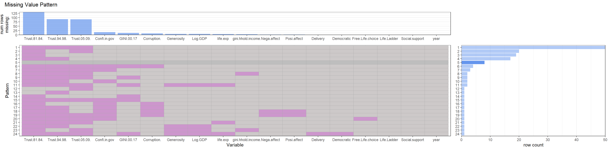
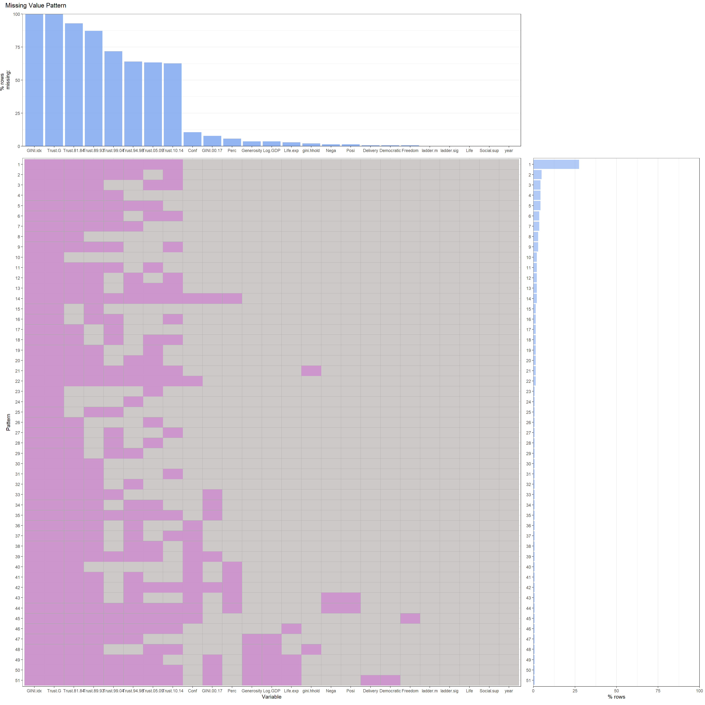

Chapter 4 Missing values
4.1 Plot_missing function
4.1.1 Q2 function from HW4
4.2 Missing data of 2018_Sample.csv
4.2.1 Load Data
## Number of variables 18 . Num of observations 142We fist choose 2018 data as the data file to analyze and notice the data set which have 20 variables and 142 observations.
4.2.2 Calculate Missing number of each variable
## Trust.81.84. Trust.94.98. Trust.05.09. Confi.in.gov
## 132 91 90 15
## GINI.00.17 Corruption. Log.GDP Generosity
## 11 8 5 5
## life.exp gini.hhold.income. Posi.affect Nega.affect
## 4 3 2 2
## Free.Life.choice Democratic Delivery year
## 1 1 1 0
## Life.Ladder Social.support
## 0 0We notice the data set missed a lot of Trust data, which is the “Most people can be trusted”. These data is collect by survey which is hard to gather all over the world. Noticed that the number of missing data is decreasing as years getting closer to present, we think that with the completion of the preparations, more people began to carry out this investigation. About the Confidence.in.government column, some countries are still in a state of war or instability, such as Afghanistan, so it is difficult to collect data such as confidence in the government.

We found 23 missing patterns.
- We notice the three most common missing patterns are aroused by the missing data of “Most People can be trusted”
- Another interest found is that there are no mode miss both the “average Gini between 2000 and 2017” and the “Gini of household income”.
- There is a strong correlation between “Log of GDP” and “Generosity quality”.
- For several patterns, the data of “Confidence.in.government” and corruption are usually missed at the same time.

4.2.3 Summary
Based on the above analysis, Maybe we should ignore the “most people can trust” column or at least “trust 81-84”, because they are missing in a large area, so the information provided is very limited, and because the missing decreases over time, it is difficult for us to judge Whether the survey standards of the questionnaire are consistent, so these columns may even provide noise or misleading information.